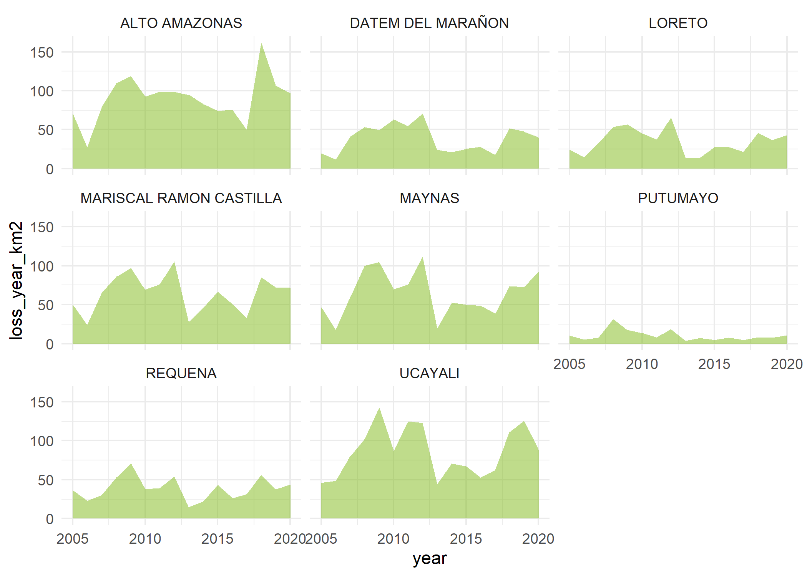

Calculate and extract remote sensing metrics for spatial health analysis 🛰️. This package offers R users a quick and easy way to obtain areal and zonal statistics of key environmental indicators, covariates, and vector-borne disease data ideal for modeling infectious and environmentally-linked diseases 🦠 within the framework of spatial epidemiology 🏥
Installation
You can install the development version of land4health from GitHub with:
# install.packages("pak")
pak::pak("harmonize-tools/land4health")
library(land4health)
ee_Initialize(quiet = TRUE)── Welcome to land4health ──────────────────────────────────────────────────────────────────
A tool of Harmonize Project to calculate and extract Remote Sensing Metrics for Spatial
Health Analysis.
Currently,`land4health` supports metrics related to the following categories:
• Enviroment
• Human intervention
• and more!
For more information about metrics, please use the `get_metrics_metadata()` function.
── Attaching core land4health packages ─────────────────────────────────────────────────────
→ rgee v1.1.7
→ sf v1.0.20List available metrics and metadata
get_metrics_metadata()
#> # A tibble: 7 × 11
#> category metric pixel_resolution_met…¹ dataset start_year end_year
#> <chr> <chr> <int> <chr> <int> <int>
#> 1 Human intervention Defores… 30 Hansen… 2000 2023
#> 2 Human intervention Human M… 300 Global… 1990 2017
#> 3 Human intervention Populat… 100 WorldP… 2000 2021
#> 4 Human intervention Urban a… 500 MODIS … 2001 2022
#> 5 Human intervention Night t… 500 VIIRS … 1992 2023
#> 6 Human intervention Human S… 30 Global… 1975 2030
#> 7 Enviroment Urban H… 1000 Urban … 2003 2020
#> # ℹ abbreviated name: ¹pixel_resolution_meters
#> # ℹ 5 more variables: resolution_temporal <chr>, layer_can_be_actived <lgl>,
#> # tags <chr>, lifecycle <chr>, url <chr>View summary of available indicators
get_metrics_summary()
#> # A tibble: 2 × 2
#> category metrics_counts
#> <fct> <int>
#> 1 Enviroment 1
#> 2 Human intervention 6Example: Calculate Forest Loss in a Custom Region
This example demonstrates how to calculate forest loss between 2005 and 2020 using a custom polygon and Earth Engine.
library(geoidep)
# Downloading the adminstration limits of Loreto provinces
provinces_loreto <- get_provinces(show_progress = FALSE) |>
subset(nombdep == "LORETO")
# Run forest loss calculation
result <- provinces_loreto |>
l4h_forest_loss(from = 2005, to = 2020,sf = FALSE)
#> Number of features: Calculating ...Number of features: 8
head(result)
#> # A tibble: 6 × 10
#> ccdd ccpp id nombdep nombprov objectid shape_area shape_length year
#> <chr> <chr> <int> <chr> <chr> <int> <dbl> <dbl> <date>
#> 1 16 02 136 LORETO ALTO AM… 136 1.57 9.96 2005-01-01
#> 2 16 02 136 LORETO ALTO AM… 136 1.57 9.96 2006-01-01
#> 3 16 02 136 LORETO ALTO AM… 136 1.57 9.96 2007-01-01
#> 4 16 02 136 LORETO ALTO AM… 136 1.57 9.96 2008-01-01
#> 5 16 02 136 LORETO ALTO AM… 136 1.57 9.96 2009-01-01
#> 6 16 02 136 LORETO ALTO AM… 136 1.57 9.96 2010-01-01
#> # ℹ 1 more variable: loss_year_km2 <dbl>
# Visualization with ggplot2
library(ggplot2)
#> Warning: package 'ggplot2' was built under R version 4.4.3
ggplot(data = result,aes(x = year,y = loss_year_km2)) +
geom_area(fill = '#80b918',alpha = 0.5) +
facet_wrap(~nombprov) +
theme_minimal()